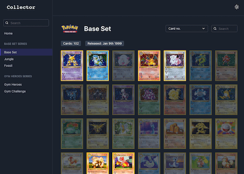

Projects
Here are some of the latest projects I've worked on, or currently working on.

Breaking Free Group
Customer-facing website with a CMS for news posts, latest research, and a contact form.
Node.jsKeystoneJSExpressPugSASS

Breaking Free Online
Evidence-based recovery support programme for alcohol & drug addictions.
ReactSASSNode.jsExpressMongoDB

Reddit Clone
A clone of reddit in the style of Vuetify. Create, read, update, and delete posts. Vote and comment.
VueJSSASSNodeJSExpressMongoDBJWT
Go to site
Collector
Pokemon trading card collection tracker. Persists to local storage. Light/dark modes.
ReactNext.js